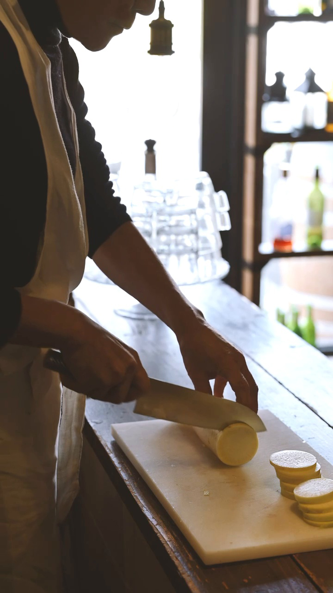
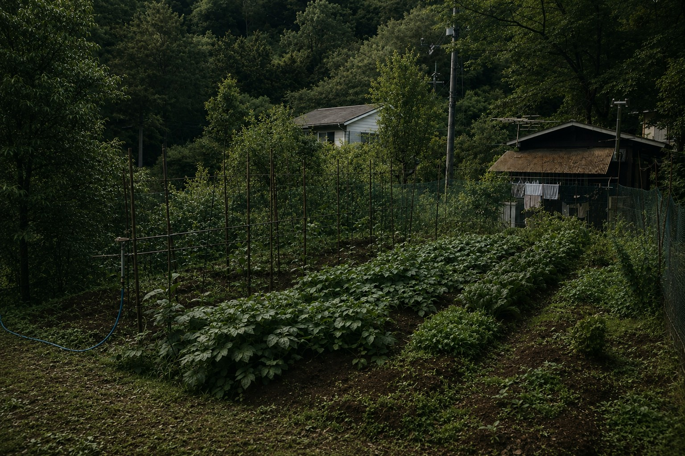
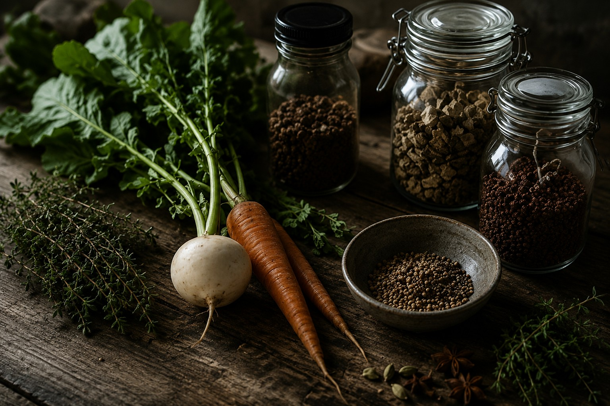
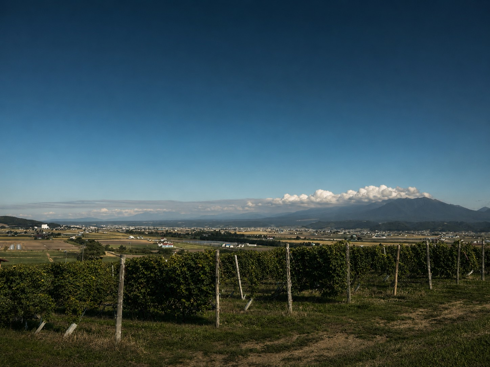
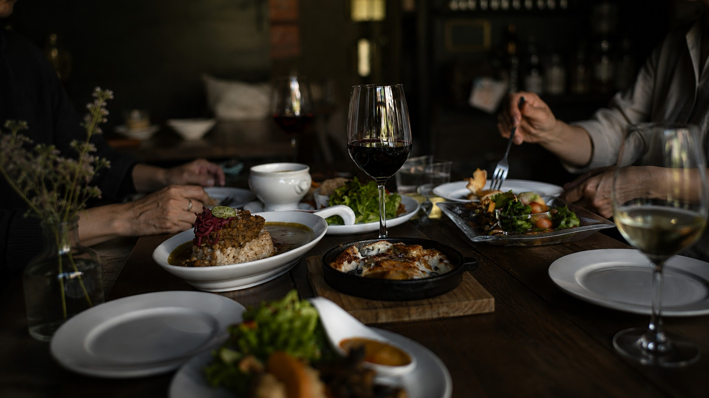

ねきの食卓について
About Neki's Dining Table
はじまりは、両親が育てる不揃いの野菜でした。
その野菜を前にすると、
何を作ろうかと考えます。
スープにしようか。
保存食にしようか。
スパイスを合わせて、新しい一皿にしようか。
料理は、私にとって季節を受け取る方法です。
フードコーディネーターとして積み重ねてきた経験を土台に、
いまは素材や季節と向き合いながら、日々自由に料理をしています。
保存食を仕込むこと。
季節の手仕事を楽しむこと。
スパイスの香りを重ねること。
日本ワインを通して、土地の風土にふれること。
私の中では、それらはすべてひとつにつながっています。
身近な素材を、どう生かすか。
その積み重ねが、ねきの料理になりました。
店でお出しする一皿も、
日本ワインとのペアリングも、
料理教室でお伝えすることも、
その根っこにある思いは変わりません。
季節にふれ、味わい、囲む。
そんな時間を、ねきでお届けできたらうれしく思います。
風景と素材

料理をする時間
素材の持ち味を引き出し、五感で季節を感じる一皿へと仕立てます。

岡山・美作の畑
両親が丹精込めて育てる、生命力あふれる不揃いの野菜たち。

野菜とスパイス
新鮮な素材にハーブやスパイスを掛け合わせ、新しい表情を引き出します。

日本ワインとの出会い
日本の土地が育むワイン。風土が香る一杯と料理のペアリング。

ねきの食卓
美味しい料理とワインを囲み、日常がふっと調う豊かなひととき。